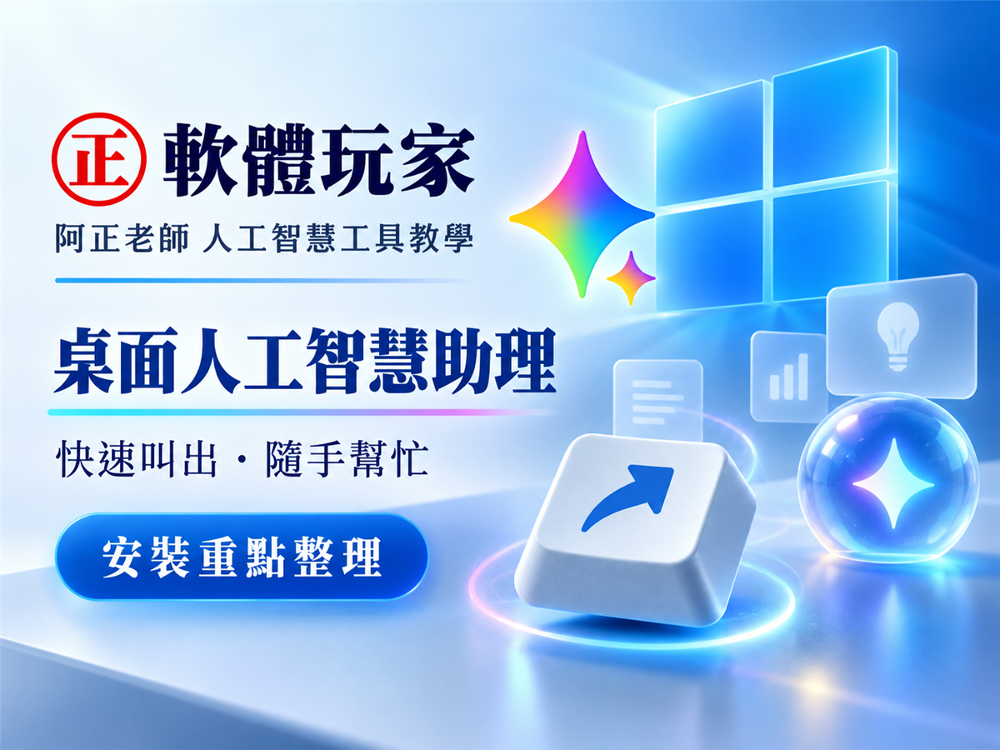

Threads｜Gemini Windows 桌面版：Alt + Space 隨叫隨到，免費與訂閱功能一次看

一句話摘要
Gemini for Windows 已有官方桌面下載頁；最直接的使用價值是按下 Alt + 空格鍵，就能在目前工作畫面上呼叫 Gemini，不必另外切換瀏覽器分頁。至於 Gemini Spark、影片生成等進階功能，是否可用與是否需要訂閱，應以官方說明及個人帳號實際顯示為準。
這則 Threads 分享了什麼
Threads 使用者 **software.player** 分享軟體玩家的 Gemini Windows 桌面版介紹，重點包括：
- Windows 10 與 Windows 11 可安裝 Gemini 桌面 App。
- 按下 Alt + Space，可以在正在工作的畫面上叫出 Gemini。
- 文章整理 Gmail、Google Drive 串接，以及 Gemini Spark、圖像生成和影片生成等延伸功能。
- App 本身可免費下載，但部分代理人、影片或其他進階功能可能受 Google AI 方案、年齡與地區供應限制影響。
官方頁面目前確認的內容
Google 官方 Gemini 電腦版頁面目前明確列出：
- 提供 Windows 與 macOS 下載入口。
- Windows 快速鍵為 Alt + 空格鍵；macOS 為 Option + 空格鍵。
- Gemini 可在工作畫面上協助提問、查證事實與撰寫草稿。
- Gemini Spark 被定位為可處理多步驟研究、規劃與統整工作的個人 AI 代理。
- 官方頁面展示與 Google 文件、Gmail、Drive、Calendar 等常用應用程式整合的方向。
- 官方提醒：Google AI 方案訂閱者須年滿 18 歲才能使用特定功能，且相容性與適用情形可能不同。
實際使用情境
### 1. 減少視窗切換
寫文件、看網頁或修改程式時，可以直接使用 Alt + Space 叫出 Gemini，快速詢問定義、改寫句子、整理重點或請它協助發想，再回到原本的工作畫面。
這個設計的重點不一定是增加新的模型能力，而是把 AI 入口放到更靠近工作的位置，降低「切到瀏覽器、找到分頁、貼上內容」的操作成本。
### 2. Google 生態系工作流
若工作資料本來就集中在 Gmail、Google Drive 或其他 Google 服務，桌面版的整合方向可能適合用來整理郵件、彙整文件或建立專案摘要。不過，授權 AI 讀取信箱與雲端硬碟前，應先確認公司資安規範、客戶個資與機密資料政策。
### 3. 圖像與影片創作
官方頁面展示圖像、影片與音樂等創作入口；延伸文章則提到 Nano Banana 與 Gemini Omni 等名稱。這些功能的實際可用性、免費額度與方案限制可能依帳號、地區和時間變動，不宜只依社群貼文推定每位使用者都能使用。
免費與付費界線
目前可以較穩妥地這樣理解：
- Gemini 桌面 App：官方提供下載入口。
- 基本 Gemini 問答：是否完全等同網頁版權益，仍應以登入後帳號顯示為準。
- Gemini Spark：官方頁面列為個人 AI 代理功能；特定功能可能受 Google AI 方案限制。
- 影片生成與其他創作功能：可能需要特定方案或受地區供應限制。
- Google AI 方案：官方提醒特定功能要求訂閱者年滿 18 歲。
安裝與安全提醒
- 優先從 Google 官方頁面下載：https://gemini.google/desktop/
- 安裝後以 Google 帳號登入，再測試 Alt + 空格鍵。
- 如果快速鍵與其他工具衝突，檢查 PowerToys、視窗管理器或既有快捷鍵設定。
- 觀察舊電腦的記憶體與開機影響，不要只採信「輕量、不拖慢電腦」這類宣傳描述。
- 啟用 Gmail 或 Drive 整合前，先確認資料權限與組織資安規範。
查核與限制
- 已由 Google 官方頁面確認 Windows／macOS 下載入口，以及 Windows 的 Alt + 空格鍵快速鍵。
- Threads 原貼文與延伸文章提到的發布日期、功能名稱和供應狀況，仍屬來源作者整理；功能是否在台灣帳號出現，應以實際登入後畫面為準。
- 本卡不把社群文章中的「全球開放」、免費額度數字或所有進階功能可用性視為永久保證。
- 本文保存的是功能脈絡與使用注意事項，不取代 Google 官方服務條款、隱私政策或最新產品公告。
原始連結
- Threads 分享連結：https://www.threads.com/share/_--pfFhoz/
- Threads canonical：https://www.threads.com/@software.player/post/DdMTHqrkvr3
- 延伸文章：https://pcrookie.com/gemini-windows-desktop-app-guide-2026/
- Google 官方 Gemini 電腦版：https://gemini.google/desktop/